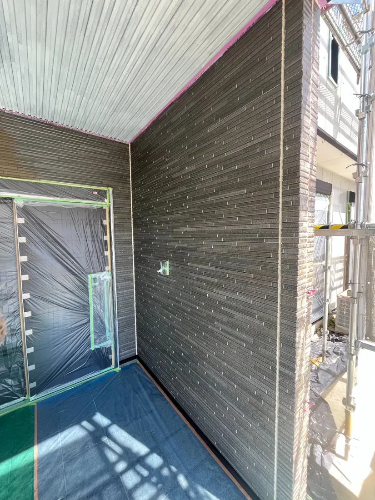
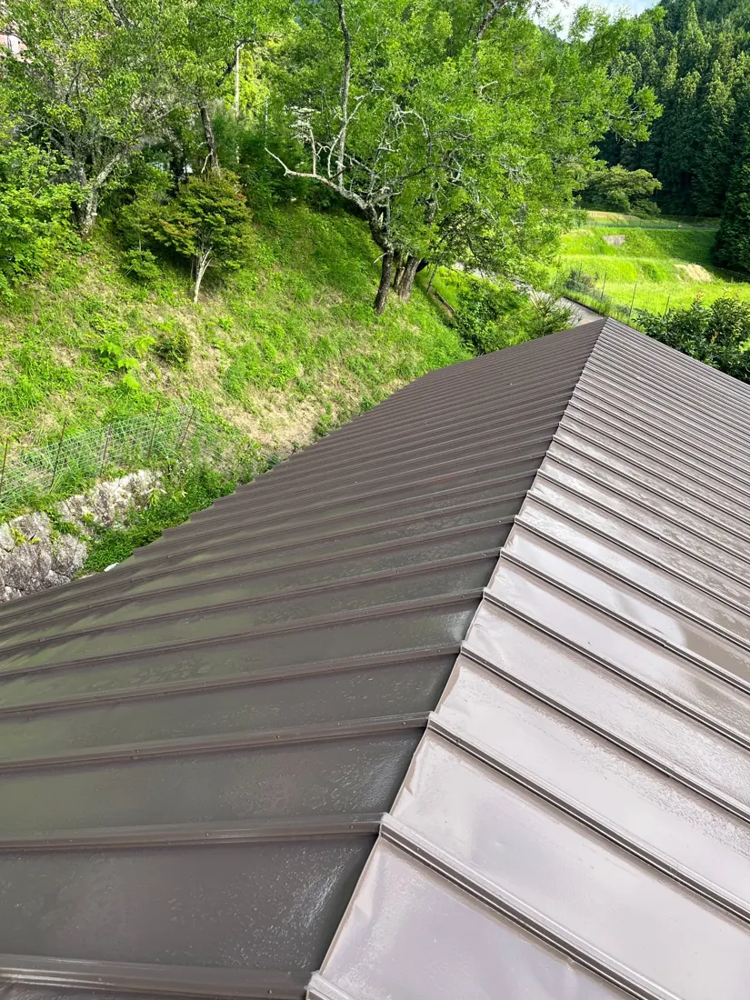

A：画面下部に固定写真を見ている途中でも電話へ進める。ただし写真や操作を隠していないか確認してみよう。
外壁や屋根の傷み、小さな補修のこと。まだ工事を決めていない段階でも、まずは気になることをお聞かせください。

「これくらいで相談していいのかな？」と思うことも、気軽に聞ける雰囲気を目指しています。
写真で仕上がりや仕事の丁寧さを見てみましょう。

気になる箇所があれば、まだ工事を決めていなくても相談できます。（内容は仮）
A. 気になった段階で、まず状態についてご相談ください。
A. 相談してから考えたい、という方もいらっしゃいます。
A. 「外壁が気になるので相談したい」と伝えるところからで大丈夫です。
「外壁のことで、少し聞きたいことがあるのですが……」そんな一言から始める案です。
※ 実際の電話受付時間、費用の有無、対応地域などは友人夫妻と確認してから表示します。
友人が見せる場合／お客さんが自分で見る場合の両方で試せます。
気に入った方式を友人夫妻に聞くときは「どれが好き？」に加えて「お客さんに使ってほしいのはどれ？」も聞いてみてください。比較用の試作品です。電話ボタンは実際には発信しません。内容・条件は未確定です。写真は共有済みの施工写真を利用しています。